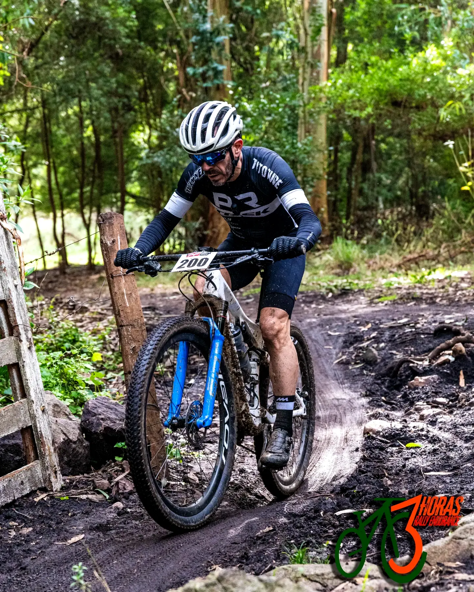

La clasicacion esta editada de acuerdo a como llegaron, en la entrega de premios a los tres primeros de la general de damas y caballeros se los saco de la categoria por tener premio de general, pero aqui esta reflejado como salieron tanto en general como en catgeoria.
A todos los presentes INFINITAS GRACIAS por su presencia y sera hasta el año que viene. KMI.
Clasificación General y Categorias
Pto.Gral. N° Apellido, Nombre y Localidad Pto. Cat. Tiempo Descuento Total
1 509 Russo Martin de Chacabuco 1° B1 01:27:26 00:04:00 01:23:26
2 610 Hidalgo Miguel Angel de Ayacucho 1° B2 01:27:30 00:04:00 01:23:30
3 327 Ramos Sergio Damian de Necochea 1° A1 01:25:38 00:02:00 01:23:38
4 409 Molino Raul de La Plata 1° A2 01:26:27 00:02:00 01:24:27
5 414 Amoz Fabian de Ayacucho 2° A2 01:26:35 00:02:00 01:24:35
6 220 Tami Juan de Tandil 1° ELITE 01:25:05 00:00:00 01:25:05
7 401 Martiren Javier de Rauch 3° A2 01:27:25 00:02:00 01:25:25
8 102 Savoia Raul de La Plata 1° SUB 23 01:25:29 00:00:00 01:25:29
9 415 Contreras Hector de Balcarce 4° A2 01:27:37 00:02:00 01:25:37
10 413 Erdocia Martin de G. Chavez 5° A2 01:27:44 00:02:00 01:25:44
11 403 Acosta Fabian de Rauch 6° A2 01:28:11 00:02:00 01:26:11
12 507 Cassani German de Cañuelas 2° B1 01:30:41 00:04:00 01:26:41
13 107 Giuliano Cristian de Balcarce 2° SUB 23 01:26:47 00:00:00 01:26:47
14 516 Perez Angel Gabriel de Necochea 3° B1 01:31:38 00:04:00 01:27:38
15 515 Lafardi Adrian de Necochea 4° B1 01:31:50 00:04:00 01:27:50
16 608 Colavita Marcelo Fabian de Balcarce 2° B2 01:31:53 00:04:00 01:27:53
17 311 Raineri Enrique de Mar del Plata 2° A1 01:30:09 00:02:00 01:28:09
18 427 Tami Gerardo de Tandil 7° A2 01:30:13 00:02:00 01:28:13
19 203 Della Magiora German de Rauch 2° ELITE 01:28:15 00:00:00 01:28:15
20 206 Diaz Juan Manuel de Rauch 3° ELITE 01:28:35 00:00:00 01:28:35
21 417 Contreras Carlos de Balcarce 8° A2 01:30:35 00:02:00 01:28:35
22 419 Fernandez Andres de Tandil 9° A2 01:30:47 00:02:00 01:28:47
23 423 Azimonti Hernan de Azul 10° A2 01:30:55 00:02:00 01:28:55
24 607 Parodi Nestor Martin de Cnel. Pringles 3° B2 01:32:56 00:04:00 01:28:56
25 613 Etchevarne Marcelo de Tandil 4° B2 01:33:15 00:04:00 01:29:15
26 216 Mazotti Damian de Dolores 4° ELITE 01:29:17 00:00:00 01:29:17
27 514 Fernandez Leonardo Martin de Tandil 5° B1 01:33:18 00:04:00 01:29:18
28 606 Ortubay Jorge de Tandil 5° B2 01:33:25 00:04:00 01:29:25
29 428 Rossi Martin de Necochea 11° A2 01:31:51 00:02:00 01:29:51
30 402 Farriols Marcelo de Mar del Plata 12° A2 01:31:52 00:02:00 01:29:52
31 312 Diez Hernan H. de Mar del Plata 3° A1 01:31:54 00:02:00 01:29:54
32 412 Beloscar Dario de C. Pringles 13° A2 01:32:29 00:02:00 01:30:29
33 108 Rezola Luciano de Tandil 3° SUB 23 01:30:37 00:00:00 01:30:37
34 204 Krauel Cristian de Rauch 5° ELITE 01:30:45 00:00:00 01:30:45
35 317 Gamondi Marcos de Olavarria 4° A1 01:32:48 00:02:00 01:30:48
36 104 Maldonado Oscar Mario de Tandil 4° SUB 23 01:30:52 00:00:00 01:30:52
37 612 Arruti Hector Miguel de Necochea 6° B2 01:34:55 00:04:00 01:30:55
38 212 Voullioz Barlos Agustin de Tandil 6° ELITE 01:31:01 00:00:00 01:31:01
39 308 Marchessi Franco Alberto de Bolivar 5° A1 01:33:10 00:02:00 01:31:10
40 307 Puglia Sergio Daniel de Rauch 6° A1 01:33:17 00:02:00 01:31:17
41 704 Vidal Jorge de La Plata 1° C1 01:35:25 00:04:00 01:31:25
42 508 Marquez Ruben de Cap. Sarmiento 6° B1 01:35:26 00:04:00 01:31:26
43 810 Alvarez Oscar de Marcos Paz 1° C2 01:35:53 00:04:00 01:31:53
44 223 Ferreiro Andres de Tandil 7° ELITE 01:31:55 00:00:00 01:31:55
45 319 Navarro Juan Jose de Dolores 7° A1 01:34:10 00:02:00 01:32:10
46 416 Desimone Marcelo Adrian de Balcarce 14° A2 01:34:25 00:02:00 01:32:25
47 207 De Vigo Franco de Rauch 8° ELITE 01:32:55 00:00:00 01:32:55
48 424 Almeida Anibal de Tandil 15° A2 01:35:19 00:02:00 01:33:19
49 429 Cordich Roberto Esteban de Necochea 16° A2 01:35:27 00:02:00 01:33:27
50 105 Ponce Mateo de Tapalque 5° SUB 23 01:33:43 00:00:00 01:33:43
51 301 Oruezabal Roberto de Rauch 8° A1 01:35:43 00:02:00 01:33:43
52 407 Romero Esteban de Maipu 17° A2 01:35:50 00:02:00 01:33:50
53 218 Magas Emiliano de Balcarce 9° ELITE 01:34:02 00:00:00 01:34:02
54 705 Martinez Hugo de Castelli 2° C1 01:38:09 00:04:00 01:34:09
55 310 De Vigo Ricardo de Rauch 9° A1 01:36:12 00:02:00 01:34:12
56 323 Chiachio Ruben de Tandil 10° A1 01:36:13 00:02:00 01:34:13
57 501 Othar Pedro de Rauch 7° B1 01:38:19 00:04:00 01:34:19
58 214 Perez Dario de Tandil 10° ELITE 01:34:23 00:00:00 01:34:23
59 7 Morales Nicolas de Brandsen 1° Juveniles 01:40:28 00:06:00 01:34:28
60 4 Irigoyen Juan Jose de Lezama 2° Juveniles 01:40:30 00:06:00 01:34:30
61 306 Rebortella Roque de Rauch 11° A1 01:36:38 00:02:00 01:34:38
62 806 Murarotto Raul de Cap. Sarmiento 2° C2 01:38:47 00:04:00 01:34:47
63 205 Tedesco Silvio de Rauch 11° ELITE 01:34:49 00:00:00 01:34:49
64 325 Rinaudo Marcos de Tandil 12° A1 01:36:51 00:02:00 01:34:51
65 322 Contreras Luciano de Tandil 13° A1 01:37:23 00:02:00 01:35:23
66 430 Rusciolelli Roberto de Cachari 18° A2 01:37:54 00:02:00 01:35:54
67 812 Zarate Luis de C. Pringles 3° C2 01:40:08 00:04:00 01:36:08
68 210 Marchionni Juan de Miramar 12° ELITE 01:36:20 00:00:00 01:36:20
69 801 Herreria Hector de Rauch 4° C2 01:40:20 00:04:00 01:36:20
70 316 Estens Cristian de Tandil 14° A1 01:38:21 00:02:00 01:36:21
71 405 Alvarez Marcelo de Bolivar 19° A2 01:38:28 00:02:00 01:36:28
72 321 De Miguel Alejandro de Tandil 15° A1 01:39:34 00:02:00 01:37:34
73 326 Gonzalez Cristian de Tandil 16° A1 01:39:39 00:02:00 01:37:39
74 709 Lescano Mario de Pila 3° C1 01:41:40 00:04:00 01:37:40
75 410 Roldan Bruno de Playa Dorada 20° A2 01:39:41 00:02:00 01:37:41
76 201 Othar Hector Jose de Rauch 13° ELITE 01:38:10 00:00:00 01:38:10
77 506 Ferro Juan Manuel de Cañuelas 8° B1 01:42:15 00:04:00 01:38:15
78 513 Larraburu Gustavo de Tandil 9° B1 01:42:17 00:04:00 01:38:17
79 221 Torras Federico de Azul 14° ELITE 01:38:24 00:00:00 01:38:24
80 811 Giachino Alfredo de Ayacucho 5° C2 01:42:32 00:04:00 01:38:32
81 703 Bulacio Carlos de Pilar 4° C1 01:43:00 00:04:00 01:39:00
82 908 Aguerre Florencio de Tandil 1° D 01:45:24 00:06:00 01:39:24
83 425 Prado Diego Martin de Azul 21° A2 01:41:38 00:02:00 01:39:38
84 904 Vazquez Luis Alberto de Rauch 2° D 01:45:42 00:06:00 01:39:42
85 406 Herrera Roque Antonio de Rauch 22° A2 01:41:44 00:02:00 01:39:44
86 903 Bernatene Miguel de Rauch 3° D 01:45:59 00:06:00 01:39:59
87 318 Concetti Diego de Mar del Plata 17° A1 01:42:05 00:02:00 01:40:05
88 1005 Barra Maria Lujan de Tapalque 1° Damas "A" 01:46:05 00:06:00 01:40:05
89 609 Castiglione Gustavo de Azul 7° B2 01:44:16 00:04:00 01:40:16
90 315 Carrilao Alfredo Ezequiel de G. Chavez 18° A1 01:42:22 00:02:00 01:40:22
91 905 Rogora Juan Carlos de Castelli 4° D 01:46:24 00:06:00 01:40:24
92 517 Deheza Marcelo de Tandil 10° B1 01:44:34 00:04:00 01:40:34
93 404 Vazquez Mauricio de Rauch 23° A2 01:42:39 00:02:00 01:40:39
94 804 Etcheverry Horacio de Las Flores 6° C2 01:45:12 00:04:00 01:41:12
95 215 Nesltal Mauro de Tandil 15° ELITE 01:41:15 00:00:00 01:41:15
96 504 Mendiondo Walter de Rauch 11° B1 01:45:16 00:04:00 01:41:16
97 518 Alonso Alberto de Rauch 12° B1 01:45:22 00:04:00 01:41:22
98 426 Gomez Pablo de Tandil 24° A2 01:43:47 00:02:00 01:41:47
99 605 Faccio Hugo de Rauch 8° B2 01:45:53 00:04:00 01:41:53
100 313 Malcorra Alejandro de Tandil 19° A1 01:44:10 00:02:00 01:42:10
101 209 Lacentre Eduardo de Bolivar 16° ELITE 01:42:20 00:00:00 01:42:20
102 808 Romeo Miguel Alberto de Tandil 7° C2 01:46:26 00:04:00 01:42:26
103 807 Martinez Eduardo de Castelli 8° C2 01:46:28 00:04:00 01:42:28
104 302 Tedesco Nestor Horacio de Rauch 20° A1 01:44:36 00:02:00 01:42:36
105 5 Luetken Jürgen de Azul 3° Juveniles 01:49:02 00:06:00 01:43:02
106 320 Ocampos Walter de Dolores 21° A1 01:45:03 00:02:00 01:43:03
107 603 Castelli Enrique Fabian de Fcio. Varela 9° B2 01:47:15 00:04:00 01:43:15
108 611 Lastra Daniel de Tandil 10° B2 01:47:29 00:04:00 01:43:29
109 803 Oruezabal Ruben Dario de Rauch 9° C2 01:47:30 00:04:00 01:43:30
110 305 Cejas Matias de La Plata 22° A1 01:46:00 00:02:00 01:44:00
111 710 Pablo Norberto de Olavarria 5° C1 01:48:23 00:04:00 01:44:23
112 106 Porrez Santiago de Dolores 6° SUB 23 01:44:37 00:00:00 01:44:37
113 702 Krauel Angel de Rauch 6° C1 01:48:48 00:04:00 01:44:48
114 614 Merlo Juan de Tandil 11° B2 01:49:08 00:04:00 01:45:08
115 503 Arnais Hernan de Rauch 13° B1 01:49:12 00:04:00 01:45:12
116 502 Gomez Pablo Enrique de Ensenada 14° B1 01:49:21 00:04:00 01:45:21
117 519 Arias Hector de Rauch 15° B1 01:49:41 00:04:00 01:45:41
118 3 Gñochi Emanuel de Tandil 4° Juveniles 01:51:44 00:06:00 01:45:44
119 701 Torres Alberto de Miramar 7° C1 01:49:56 00:04:00 01:45:56
120 1014 Toloza Maria de Balcarce 1° Damas "B" 01:52:03 00:06:00 01:46:03
121 309 Rimoli Nazareno de Rauch 23° A1 01:49:11 00:02:00 01:47:11
122 511 Pairola Juan Jose de Las Flores 16° B1 01:51:15 00:04:00 01:47:15
123 602 Morgante Alfredo de Rauch 12° B2 01:51:39 00:04:00 01:47:39
124 1 Palma Fausto de Rauch 5° Juveniles 01:53:49 00:06:00 01:47:49
125 711 Sanchez Edgardo de San Cayetano 8° C1 01:51:55 00:04:00 01:47:55
126 601 Orellano Marcelo de Rauch 13° B2 01:51:58 00:04:00 01:47:58
127 408 Saracho Jorge de Rauch 25° A2 01:50:00 00:02:00 01:48:00
128 1024 Rebainera Liliana de Rauch 1° Damas "C" 01:54:04 00:06:00 01:48:04
129 1002 Martinez Yesica de Castelli 2° Damas "A" 01:54:09 00:06:00 01:48:09
130 708 Cobatti Daniel de Lamadrid 9° C1 01:52:57 00:04:00 01:48:57
131 805 Cerri Juan Carlos de De La Garma 10° C2 01:54:05 00:04:00 01:50:05
132 909 Aspesi Miguel Angel de Tandil 5° D 01:56:07 00:06:00 01:50:07
133 213 Gallo Alejo Oscar de Tandil 17° ELITE 01:50:42 00:00:00 01:50:42
134 813 Martinez Ruben de Tandil 11° C2 01:54:58 00:04:00 01:50:58
135 510 Planes Ruben de Tandil 17° B1 01:55:07 00:04:00 01:51:07
136 304 Castro Gaston de Rauch 24° A1 01:53:09 00:02:00 01:51:09
137 1009 Pagano Selva de Rauch 2° Damas "B" 01:57:11 00:06:00 01:51:11
138 906 Lorger Antonio de Cañuelas 6° D 01:57:31 00:06:00 01:51:31
139 902 Morales Hector Osvaldo de Rauch 7° D 01:57:49 00:06:00 01:51:49
140 604 Dualde Fabian de Rauch 14° B2 01:56:28 00:04:00 01:52:28
141 707 Galant Armando de Cañuelas 10° C1 01:56:48 00:04:00 01:52:48
142 6 Suhit Brian de Tandil 6° Juveniles 01:58:54 00:06:00 01:52:54
143 103 Martinez Juan Cruz de Castelli 7° SUB 23 01:52:58 00:00:00 01:52:58
144 418 Ferreira Carlos de Olavarria 26° A2 01:55:02 00:02:00 01:53:02
145 328 Paz Sebastian de Tandil 25° A1 01:55:58 00:02:00 01:53:58
146 208 Soria Juan Cruz de Rauch 18° ELITE 01:54:14 00:00:00 01:54:14
147 202 Orellano Yonathan de Rauch 19° ELITE 01:54:16 00:00:00 01:54:16
148 411 Mansur Cristian de Castelli 27° A2 01:56:55 00:02:00 01:54:55
149 809 Contreras Juan Manuel de Cañuelas 12° C2 01:59:03 00:04:00 01:55:03
150 101 Villarreal Jose Luis de La Plata 8° SUB 23 01:55:09 00:00:00 01:55:09
151 910 Palavecino Hugo de San Martin 8° D 02:01:31 00:06:00 01:55:31
152 907 Diaz Nestor de Tandil 9° D 02:01:36 00:06:00 01:55:36
153 1025 De los Santos Norma Beatriz de Rauch 2° Damas "C" 02:02:52 00:06:00 01:56:52
154 1003 Martinez Maria Julia de Castelli 3° Damas "A" 02:02:53 00:06:00 01:56:53
155 420 Suhit Facundo de Tandil 28° A2 01:58:59 00:02:00 01:56:59
156 1001 Arrieta Debora de Cañuelas 4° Damas "A" 02:03:36 00:06:00 01:57:36
157 1010 Herreria Natalia de Rauch 3° Damas "B" 02:03:39 00:06:00 01:57:39
158 222 Parazuco Damian de Tandil 20° ELITE 01:58:02 00:00:00 01:58:02
159 1006 Aschero Clara de Las Flores 5° Damas "A" 02:05:51 00:06:00 01:59:51
160 505 Scardino Pablo de Caseros 18° B1 02:03:54 00:04:00 01:59:54
161 421 Santos Daniel Miguel de Tandil 29° A2 02:02:20 00:02:00 02:00:20
162 712 Davances Juan Alberto de Rauch 11° C1 02:08:11 00:04:00 02:04:11
163 901 Carriego Miguel Angel de F. Varela 1° D 02:11:18 00:06:00 02:05:18
164 1004 Tulipano Gabriela de Tandil 6° Damas "A" 02:11:25 00:06:00 02:05:25
165 109 Mancuso Mariano de Necochea 9° SUB 23 02:05:54 00:00:00 02:05:54
166 224 Rebortella Lucas de Rauch 21° ELITE 02:05:59 00:00:00 02:05:59
167 802 Meaca Alberto de Rauch 13° C2 02:10:03 00:04:00 02:06:03
168 706 Orihuela Juan de La Plata 12° C1 02:11:02 00:04:00 02:07:02
169 314 Laino Mauricio de Cañuelas 26° A1 02:09:13 00:02:00 02:07:13
170 422 Gñochi Gabriel Alberto de Tandil 30° A2 02:11:27 00:02:00 02:09:27
171 324 Pelegri Christian de Tandil 27° A1 02:13:46 00:02:00 02:11:46
172 2 Celiberti Martin de Rauch Juveniles
Ab. 1011 Arevalo Maria Luisa de Rauch Damas "B"
Ab. 1012 De los Santos Eva de Rauch Damas "B"
Ab. 1013 Meji Maria Laura de Cañuelas Damas "B"
Ab. 1015 Barraza Daniela de Tandil Damas "B"
Ab. 512 Peralta Marcelo de Mercedes B1
Ab. 303 Lapolla Gaston de Rauch A1
Ab. 211 Bernandez Ezequiel de Cordoba ELITE
Ab. 217 Iturralde Pablo Luciano de Tandil ELITE
Ab. 219 Palomino Lucas de Balcarce ELITE
Menciones Especiales
Walter Mendiondo, primer inscripto en la competencia
Javier Martiren, Mejor rauchense entre los caballeros
Liliana Rebainera, Mejor rauchense entre las damas